Jetzt besonders gut zu beobachten
-
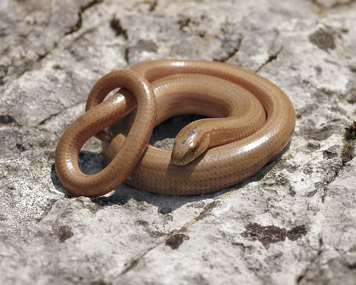
Foto: Hans Hillewaert, CC BY-SA 4.0 – Lizenzangaben im BildnachweisdämmerungsaktivBlindschleiche
Amphibien & ReptilienBeinlose Echse mit glatten, glänzenden Schuppen. Sie ist keine Schlange und frisst gern Nacktschnecken.
-
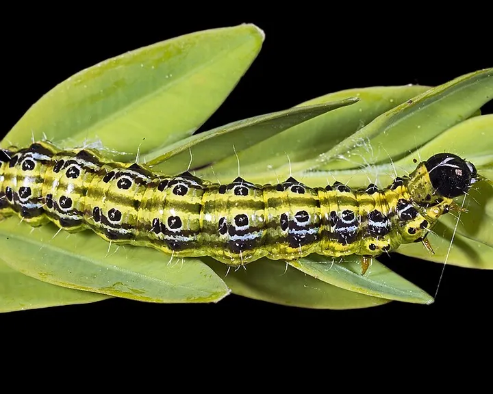
Foto: Didier Descouens, CC BY-SA 4.0 – Lizenzangaben im BildnachweisnachtaktivBuchsbaumzünsler
SchädlingeEingeschleppter Falter, dessen grün-schwarze Raupen Buchsbäume von innen heraus kahl fressen.
-
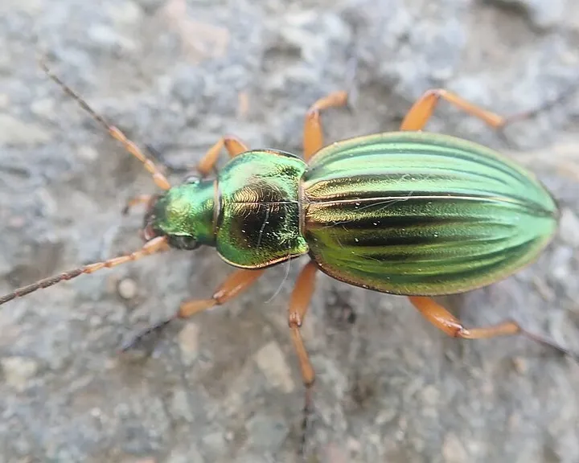
Foto: Dr. Guido Bohne, CC BY-SA 4.0 – Lizenzangaben im BildnachweistagaktivnachtaktivGoldlaufkäfer
NützlingeMetallisch goldgrün glänzender Laufkäfer, der flink über die Beete rennt und Schnecken jagt.
-
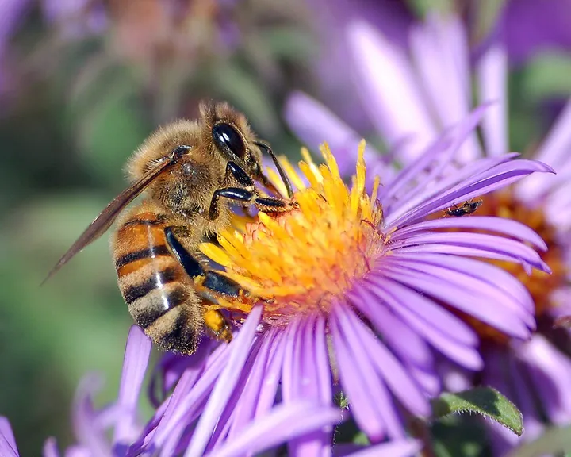
Foto: John Severns, Gemeinfrei – Lizenzangaben im BildnachweistagaktivHonigbiene
BestäuberDie Biene des Imkers: schlank, bräunlich und im Frühjahr unermüdlich in den Obstblüten unterwegs.
-
 Foto: Sven Grand, CC BY-SA 2.0 de – Lizenzangaben im Bildnachweis tagaktiv
Foto: Sven Grand, CC BY-SA 2.0 de – Lizenzangaben im Bildnachweis tagaktivLilienhähnchen
SchädlingeLeuchtend lackroter Käfer, der mit seinen Larven Lilien und Kaiserkronen zerfrisst.
-
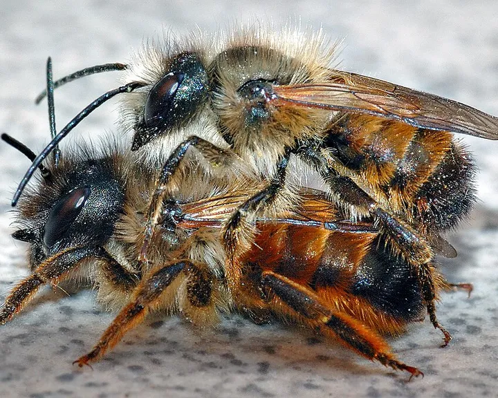
Foto: André Karwath aka Aka, CC BY-SA 2.5 – Lizenzangaben im BildnachweistagaktivRote Mauerbiene
BestäuberFuchsrot behaarte Wildbiene, die im Frühling in Insektenhotels und Mauerritzen nistet.
-
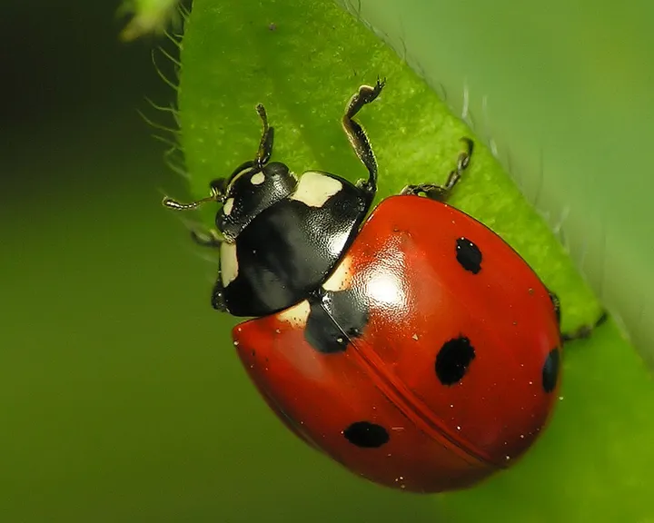
Foto: Reytan, CC BY-SA 3.0 – Lizenzangaben im BildnachweistagaktivSiebenpunkt-Marienkäfer
NützlingeDer bekannteste Glücksbringer im Garten: rot mit sieben schwarzen Punkten und ein eifriger Blattlausjäger.
-
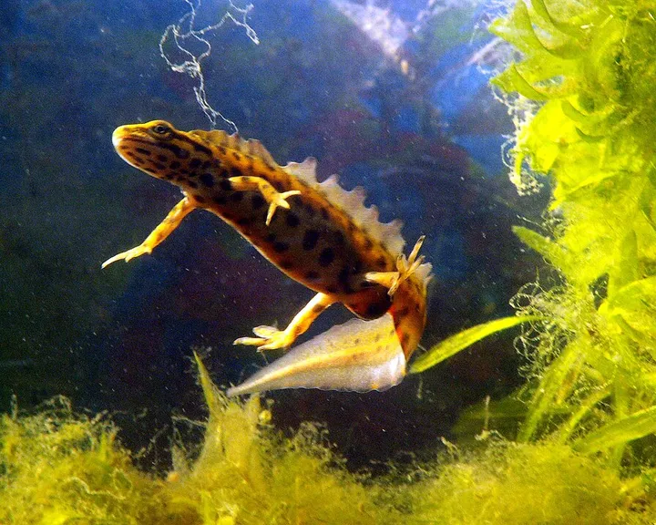
Foto: Piet Spaans, CC BY-SA 2.5 – Lizenzangaben im BildnachweisnachtaktivTeichmolch
Amphibien & ReptilienKleiner Molch, der im Frühjahr im Gartenteich lebt. Das Männchen trägt dann einen gewellten Rückenkamm.
-
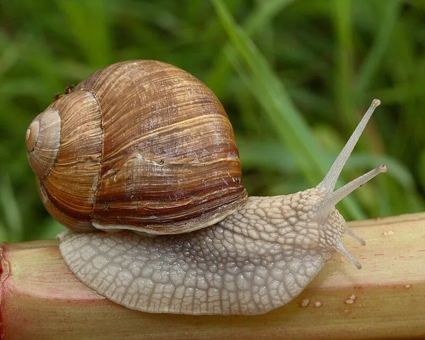
Foto: Waugsberg, CC BY-SA 3.0 – Lizenzangaben im BildnachweisdämmerungsaktivWeinbergschnecke
NützlingeDie größte heimische Gehäuseschnecke. Sie frisst vor allem welke Pflanzen und ist besonders geschützt.
-
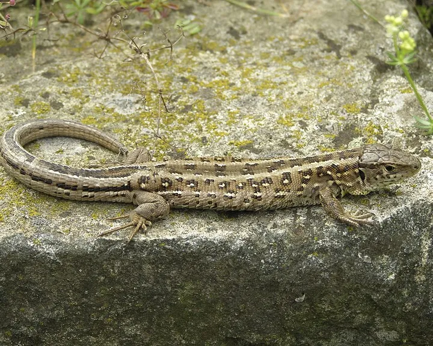
Foto: Krzysztof Mizera, CC BY-SA 3.0 – Lizenzangaben im BildnachweistagaktivZauneidechse
Amphibien & ReptilienKräftige Eidechse, die sich an sonnigen Mauern wärmt. Die Männchen tragen im Frühjahr grüne Flanken.
Außerdem unterwegs
-
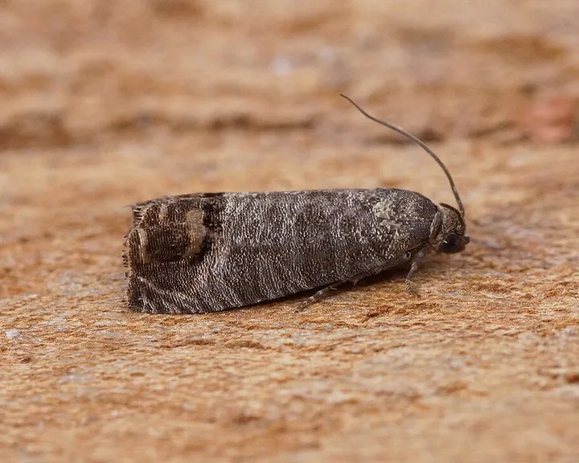
Foto: Ben Sale, CC BY 2.0 – Lizenzangaben im BildnachweisdämmerungsaktivApfelwickler
SchädlingeUnscheinbarer grauer Falter, dessen Raupe sich bis zum Kerngehäuse in Äpfel frisst.
-
 Foto: Ermell, CC BY-SA 4.0 – Lizenzangaben im Bildnachweis tagaktiv
Foto: Ermell, CC BY-SA 4.0 – Lizenzangaben im Bildnachweis tagaktivAsiatischer Marienkäfer
NützlingeEingeschleppter Marienkäfer mit wechselndem Kleid: gelb, orange oder schwarz, mit null bis neunzehn Punkten.
-
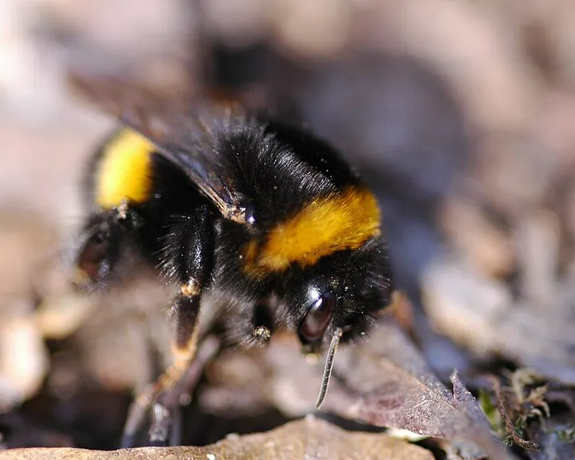
Foto: Vera Buhl, CC BY-SA 3.0 – Lizenzangaben im BildnachweistagaktivDunkle Erdhummel
BestäuberPelzige, laut brummende Hummel mit gelben Binden und weißem Hinterleibsende. Eine der ersten im Frühjahr.
-
 Foto: Peter Trimming, CC BY 2.0 – Lizenzangaben im Bildnachweis tagaktiv
Foto: Peter Trimming, CC BY 2.0 – Lizenzangaben im Bildnachweis tagaktivEichhörnchen
SäugetiereFlinker Kletterer mit buschigem Schwanz, der im Herbst Nüsse für den Winter vergräbt.
-
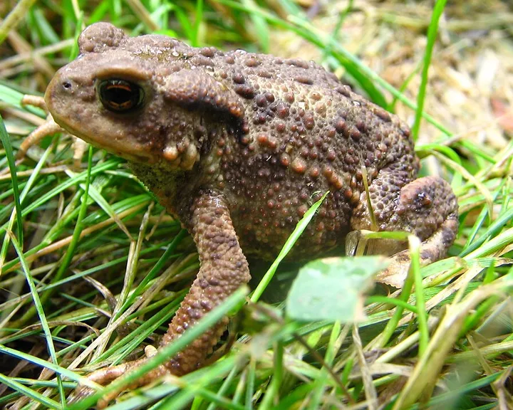
Foto: Taka, CC BY-SA 3.0 – Lizenzangaben im BildnachweisnachtaktivErdkröte
Amphibien & ReptilienWarzige, braune Kröte mit kupferroten Augen, die nachts Schnecken und Käfer frisst.
-
 Foto: Didier Descouens, CC BY-SA 4.0 – Lizenzangaben im Bildnachweis nachtaktiv
Foto: Didier Descouens, CC BY-SA 4.0 – Lizenzangaben im Bildnachweis nachtaktivFlorfliege
NützlingeZartes, hellgrünes Insekt mit goldenen Augen und durchsichtigen Flügeln, das nachts ans Licht fliegt.
-
 Foto: Michel Langeveld, CC BY-SA 4.0 – Lizenzangaben im Bildnachweis tagaktiv
Foto: Michel Langeveld, CC BY-SA 4.0 – Lizenzangaben im Bildnachweis tagaktivGartenlaubkäfer
SchädlingeKleiner Käfer mit grün glänzendem Halsschild, der im Juni schwärmt. Seine Engerlinge fressen Rasenwurzeln.
-
 Foto: David McCorquodale, CC BY 4.0 – Lizenzangaben im Bildnachweis nachtaktiv
Foto: David McCorquodale, CC BY 4.0 – Lizenzangaben im Bildnachweis nachtaktivGefurchter Dickmaulrüssler
SchädlingeNachtaktiver Rüsselkäfer, der halbrunde Buchten in Blätter frisst. Seine Larven zerstören Wurzeln.
-
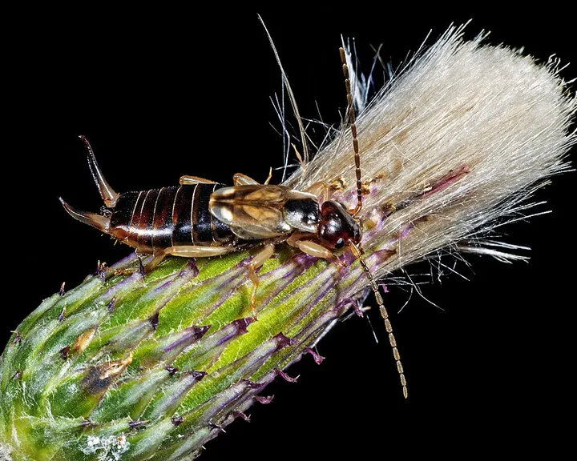
Foto: Didier Descouens, CC BY-SA 4.0 – Lizenzangaben im BildnachweisnachtaktivGemeiner Ohrwurm
NützlingeBrauner Nachtjäger mit Zange am Hinterleib. Er kriecht weder in Ohren noch kneift er ernsthaft.
-
 Foto: Uoaei1, CC BY-SA 4.0 – Lizenzangaben im Bildnachweis tagaktiv
Foto: Uoaei1, CC BY-SA 4.0 – Lizenzangaben im Bildnachweis tagaktivGroßer Kohlweißling
SchädlingeWeißer Schmetterling mit schwarzen Flügelspitzen, dessen Raupen in Gruppen Kohl kahl fressen.
-
 Foto: Alvesgaspar, CC BY-SA 3.0 – Lizenzangaben im Bildnachweis tagaktiv
Foto: Alvesgaspar, CC BY-SA 3.0 – Lizenzangaben im Bildnachweis tagaktivHainschwebfliege
NützlingeGelb-schwarz gebänderte Fliege, die wie festgenagelt in der Luft steht. Harmlos, denn sie kann nicht stechen.
-
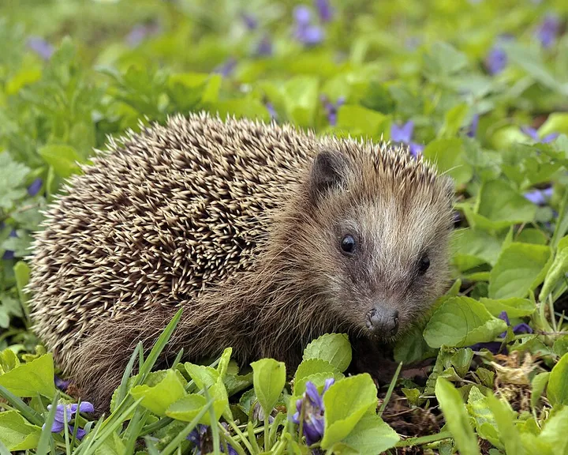
Foto: Michael Gäbler, CC BY-SA 3.0 – Lizenzangaben im BildnachweisnachtaktivIgel
SäugetiereStacheliger Nachtwanderer, der auf seiner Runde mehrere Gärten besucht und dabei Käfer und Raupen frisst.
-
 Foto: Ermell, CC BY-SA 4.0 – Lizenzangaben im Bildnachweis nachtaktiv
Foto: Ermell, CC BY-SA 4.0 – Lizenzangaben im Bildnachweis nachtaktivKleiner Frostspanner
SchädlingeFalter, der im Spätherbst fliegt. Die Weibchen können nicht fliegen und klettern die Obstbäume hinauf.
-
 Foto: Christoph Moning, CC BY 4.0 – Lizenzangaben im Bildnachweis tagaktivnachtaktiv
Foto: Christoph Moning, CC BY 4.0 – Lizenzangaben im Bildnachweis tagaktivnachtaktivMaulwurf
SäugetiereSamtschwarzer Gräber mit Schaufelhänden. Seine runden Hügel zeigen einen gesunden, wurmreichen Boden.
-
 Foto: Donald Hobern, CC BY 2.0 – Lizenzangaben im Bildnachweis nachtaktiv
Foto: Donald Hobern, CC BY 2.0 – Lizenzangaben im Bildnachweis nachtaktivRegenwurm
NützlingeDer wichtigste Gärtner unter der Erde: Er zieht Laub in seine Gänge und macht daraus fruchtbaren Humus.
-
 Foto: Peter Trimming, CC BY 2.0 – Lizenzangaben im Bildnachweis tagaktivnachtaktiv
Foto: Peter Trimming, CC BY 2.0 – Lizenzangaben im Bildnachweis tagaktivnachtaktivSchermaus
SäugetiereDie „Wühlmaus“ des Gartens: Sie frisst Wurzeln, Möhren und Tulpenzwiebeln und hinterlässt flache Erdhügel.
-
 Foto: Michael Becker, CC BY-SA 3.0 – Lizenzangaben im Bildnachweis tagaktiv
Foto: Michael Becker, CC BY-SA 3.0 – Lizenzangaben im Bildnachweis tagaktivSchwarze Bohnenlaus
SchädlingeMattschwarze Blattlaus, die im Frühsommer dichte Kolonien an Bohnen, Mohn und Dahlien bildet.
-
 Foto: Kora27, CC BY-SA 4.0 – Lizenzangaben im Bildnachweis nachtaktiv
Foto: Kora27, CC BY-SA 4.0 – Lizenzangaben im Bildnachweis nachtaktivSpanische Wegschnecke
SchädlingeDie häufigste Nacktschnecke im Gemüsebeet: einfarbig orange bis rotbraun und nach Regen in Massen unterwegs.
-
 Foto: Franco Atirador, CC BY-SA 3.0 – Lizenzangaben im Bildnachweis nachtaktiv
Foto: Franco Atirador, CC BY-SA 3.0 – Lizenzangaben im Bildnachweis nachtaktivSteinmarder
SäugetiereDer Marder der Siedlungen: lebt gern in Scheunen und auf Dachböden und ist nachts unterwegs.
-
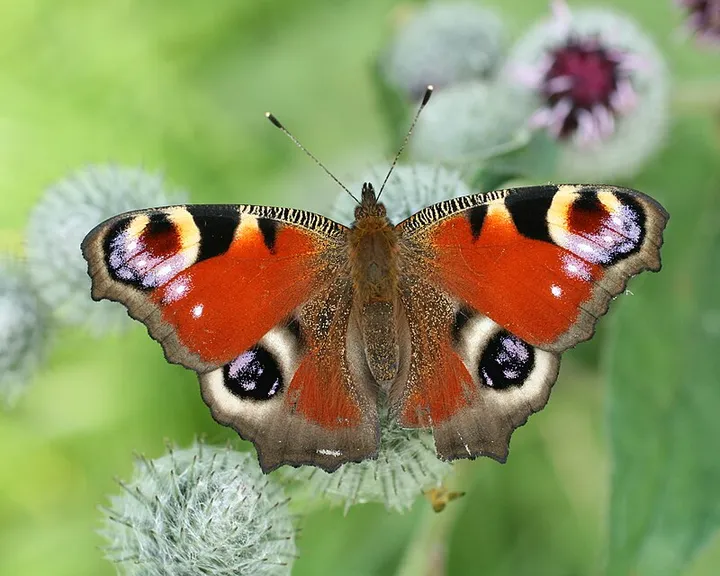
Foto: Korall, CC BY-SA 3.0 – Lizenzangaben im BildnachweistagaktivTagpfauenauge
BestäuberRotbrauner Schmetterling mit vier großen, schillernden Augenflecken auf den Flügeln.
-
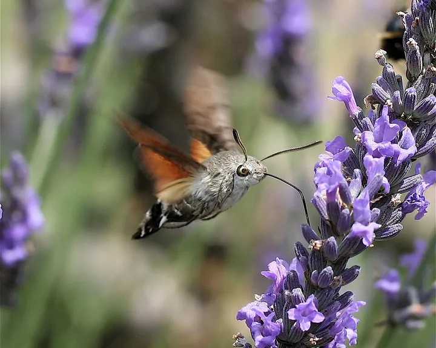
Foto: IronChris, CC BY-SA 3.0 – Lizenzangaben im BildnachweistagaktivTaubenschwänzchen
BestäuberEin Schmetterling, der wie ein Kolibri schwirrend vor Blüten steht und mit langem Rüssel Nektar saugt.
-
 Foto: Matt Muir, CC BY-SA 4.0 – Lizenzangaben im Bildnachweis nachtaktiv
Foto: Matt Muir, CC BY-SA 4.0 – Lizenzangaben im Bildnachweis nachtaktivTigerschnegel
NützlingeGroße, getigerte Nacktschnecke, die vor allem Welkes frisst und Gelege anderer Schnecken vertilgt.
-
 Foto: Dr. Guido Bohne, CC BY-SA 4.0 – Lizenzangaben im Bildnachweis tagaktiv
Foto: Dr. Guido Bohne, CC BY-SA 4.0 – Lizenzangaben im Bildnachweis tagaktivWeiße Fliege
SchädlingeWinzige weiße Insekten, die wie eine Wolke auffliegen, sobald man die Pflanze berührt.
-
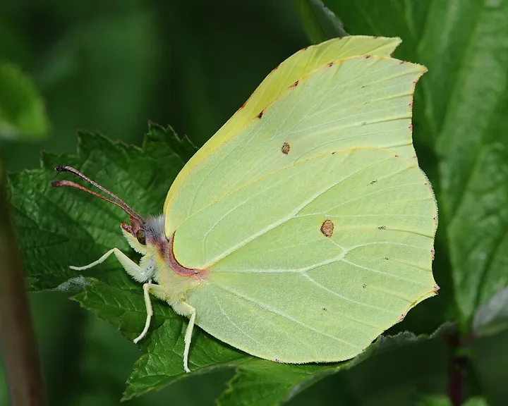
Foto: Böhringer Friedrich, CC BY-SA 2.5 – Lizenzangaben im BildnachweistagaktivZitronenfalter
BestäuberZitronengelber Schmetterling, der schon an den ersten warmen Februartagen durch den Garten fliegt.
Passend zum Mai
- Beispielfoto · Foto: Albarubescens, CC BY-SA 4.0 – Lizenzangaben im Bildnachweis
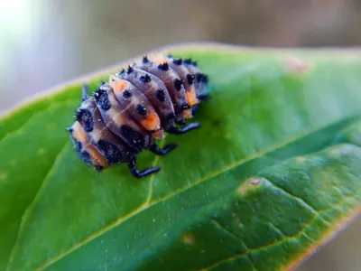
Unser TippMarienkäferlarven gegen Blattläuse
Auswahl bei Amazon
Lebende Larven, die direkt auf befallene Pflanzen gesetzt werden. Wirkt am besten bei frühem Befall.
Bei Amazon ansehen Marienkäferlarven gegen Blattläuse (Werbelink, öffnet in neuem Fenster) Ratgeber: Nützlinge fördern - Beispielfoto · Foto: Srl, CC BY-SA 3.0 – Lizenzangaben im Bildnachweis
 Unser Tipp
Unser TippHochbeet aus Holz
Auswahl bei Amazon
Rückenschonend gärtnern, und mit einer Schneckenkante kommen Nacktschnecken kaum noch an Salat und Gemüse.
Bei Amazon ansehen Hochbeet aus Holz (Werbelink, öffnet in neuem Fenster) Ratgeber: Schnecken ohne Gift
Werbelink: Wenn du über diesen Link etwas kaufst, erhält der Gartentierkompass eine kleine Provision von Amazon. Für dich ändert sich am Preis nichts. Als Amazon-Partner verdiene ich an qualifizierten Verkäufen.